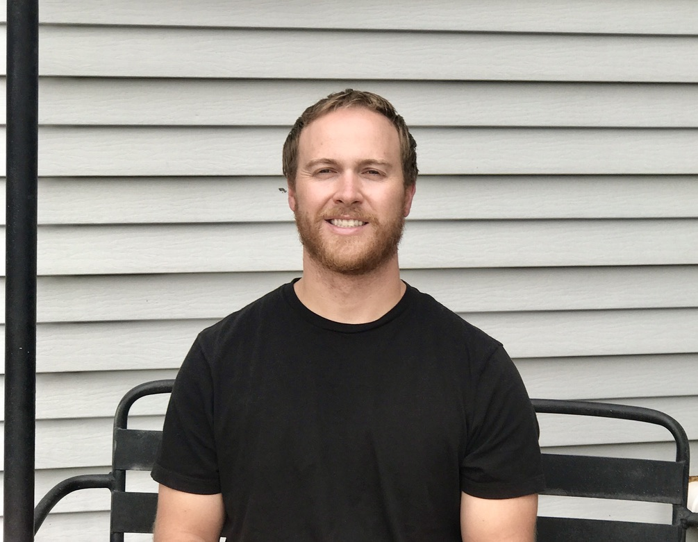
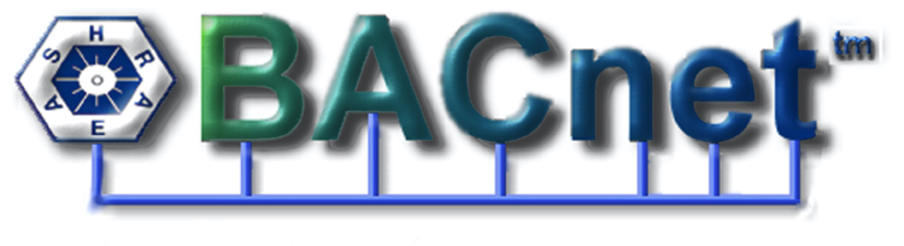
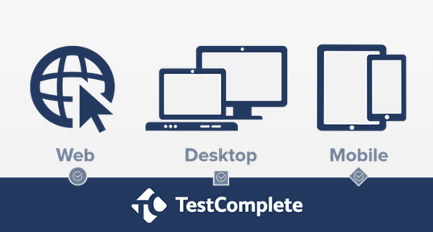

- Built and configured cyber security lab network, servers and critical infrastructure for cyber security research on OT devices
- Developed false BACnet network packets with a custom python script and Wireshark to observe network packets
- Monitored and configured Splunk dashboards to monitor Industrial Control System devices for the latest DEFcon
Cyber Security Researcher
Idaho National Laboratory

- Taught and helped local high school students learn the fundamentals about cyber security concepts
- Completely setup Active Directory, IIS, and Exchange server for a mock enterprise environment
- Created, configured, and monitored all network traffic and devices in the RADICL cyber security lab
Cybercore Instructor
Idaho National Laboratory

- Developed and created automated software tests in TestComplete using Javascript
- Collaborated with several departments and developers at the INL to make manual tests for INL websites and Software
QA Automation Engineer
Idaho National Laboratory

- Developed and created an archive converter from RTIME 12.9 and RTIME 14.3 to RTIME 15
- Implemented safe coding techniques for fatal errors in C and C++
- Learned about PLC’s and embedded devices